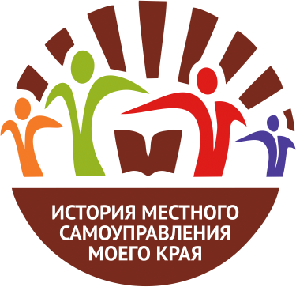

ПРАКТИКООРИЕНТИРОВАННАЯ ПРОГРАММА ДОПОЛНИТЕЛЬНОГО ОБРАЗОВАНИЯ
ДЛЯ МОЛОДЫХ ГРАЖДАН И УЖЕ СОСТОЯВШИХСЯ СПЕЦИАЛИСТОВ
ДЛЯ МОЛОДЫХ ГРАЖДАН И УЖЕ СОСТОЯВШИХСЯ СПЕЦИАЛИСТОВ

V Всероссийский конкурс «история местного
самоуправления моего края» 2021 год
самоуправления моего края» 2021 год